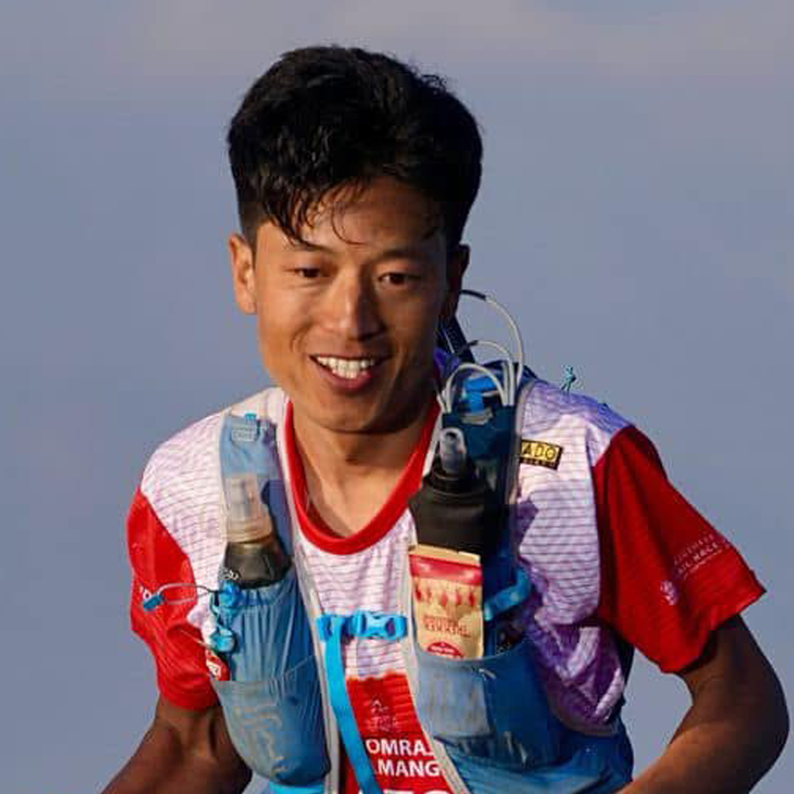
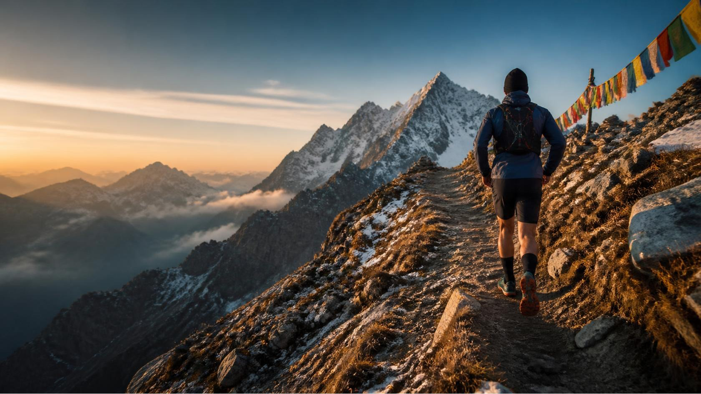

2019
42 km · Road
Kathmandu Marathon
Finish time 4:22:51
Running beyond limits. Connecting mountains, communities, and adventure.

The mountains were home long before they became a finish line.
Originally from Sindhupalchok, Nepal, I grew up immersed in rural mountain life. Farming, steep trails, and a deep connection to the land taught me resilience, humility, and respect for nature; values that continue to guide my leadership, athletic pursuits, and life in the outdoors. After more than a decade working in Nepal’s adventure tourism and outdoor industry, one run changed my direction. Inspired by my friend Arjun Rai Kulung, I stood on the starting line of the Kathmandu Marathon in 2019 and completed my first 42 km race. That finish line opened the door to road racing, trail running, ultra-distance events, and a deeper connection to the landscapes I call home. Today, I bring these experiences together as an endurance athlete who embraces every challenge, an event leader who understands that excellence lies in the details, and a mountain professional who believes the best adventures create meaningful and lasting positive impact for people, communities, and the environment.From a first marathon in Kathmandu to 100-mile trails in the hills, each race brings lessons in patience, grit and gratitude.
Two hours faster than his previous time at the distance.
Mountain paths, race days and the landscapes that make every effort worthwhile.



Mountain photography: Unsplash. Replace with event and trail photos for a personal race-day gallery.
Ten years in adventure tourism. A growing role in the sport he loves. A steady focus on people, place and getting details right.
Trekking Guide & Manager
Race Director
Timing operations, athlete coordination, logistics and race-day support.
Runner monitoring, course support, athlete assistance and safety operations.
Race planning, coordination, volunteers and participant experience.
Sport, logistics and people skills that meet where the trail begins.
Help trail running and endurance sports thrive in Nepal—with responsible tourism, environmental care, cultural preservation, athlete development and stronger mountain communities.
Grounded support for events, athletes and the people who bring mountain experiences to life.
Planning and hands-on management for trail races, from the route conversation to race-day delivery.
Guidance in event development, operations, logistics, timing systems and race execution.
Mountain running experiences and route support across Nepal, shaped by local knowledge and respect for place.
Planning a race, exploring a route or building a mountain experience? Reach out. Good things happen when the right people find each other.